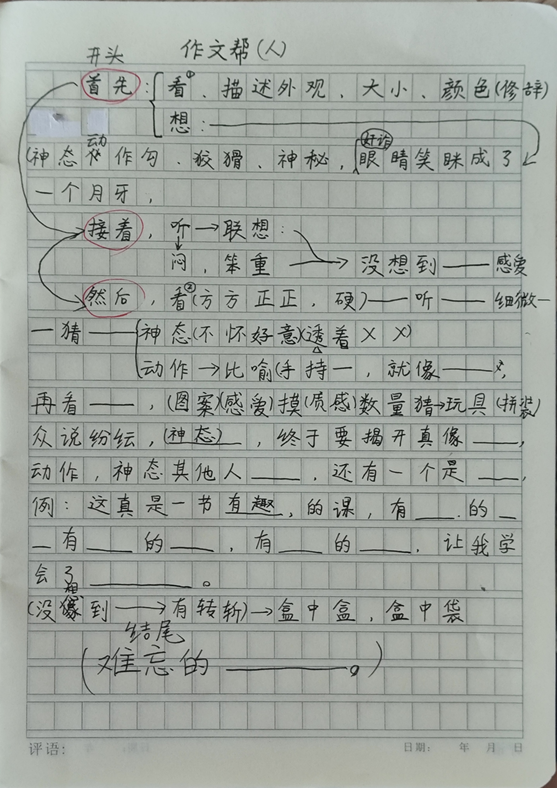

2025漳州芗城区实验小学 公园校区 四年级4班见习报告¶
202309110209 张宗达¶
最好的一节课¶
据老师所说，这种课一个月一次，而对于这个班的学生来说，大抵是第一次接受这种课。
老师称呼这种课为 实践课 活动课。
我听地非常得舒服，敬佩。这种课依据老师所说，它不会被放映到线上，也不会成为公开课，因为这种课中的热闹是领导接受不了的。 总之就是十分珍贵的一节课。
这节课同时也是一节写作课，大抵是启发孩子的用词，去仔细观察，用文本来生动地表述自己的观察所见。
课上，老师带来了一个快递盒子。尺寸大约20 15 15，黄色的瓦楞纸，用白色胶带封的口。
老师让学生描述场景，空间 时间 人物 动作 之类的内容。
“下午的第一节课 老师走上讲台，手上托着一个快递盒”
然后就是让学生用不同的方式描述这个快递盒子，从外观，大小，颜色。
板书 首先 看： 描述外观，大小，颜色（修辞）
快递盒是什么样的？ 学生回答 是 长方体 比老师的头要大一点 粘着一圈白色胶带 看起来被踩过
描述得十分朴素。于是老师开始启发这里的用词 用上修辞手法 例如：
怎么描述白色胶带--学生回答： 像是围巾 像是拉链
那么比作拉链好 还是围巾好呢。双方各自有自己的依据。这时，学生开始热烈了。
接着 让大家想象当中的物品。
学生的回答大抵是 游戏机 树叶 虫子之类的东西。
此情此景下，老师露出某种表情（我称之为坏笑）。 学生描述描述老师的神态动作 学生用一开始是用坏坏来形容的。但是在引导下得到了 狡诈 勾（嘴巴） 神神秘秘 眼睛咪成一条线 等词语。
板书 神态 狡猾 神秘 眼睛眯成了月牙
随后，老师摇了摇盒子，发出声音 让学生描述听到了什么，并描述声音听起来如何？
学生先是用了 闷 ，然后是笨重 硬邦邦的。

板书 听 闷
接着让学生去联想当中可能的东西。
真相揭晓，从盒子中掏出了一个盒子（古铜色的 装茶的 铁皮盒子）
板书 没想到-- 感受-- 描述看到的东西--
没想到是个铁皮盒子，感觉自己被骗了。 老师让学生从盒子中掏出了一个茶盒。
然后-- 看 -- （摇动盒子）听 -- 猜
老师的神态-- 不怀好意，透着，得意洋洋
老师的动作-- 手持-- 就像
让同学打开盒子（拿出一个包装袋 上面印着恐龙玩具的图案，不知道是什么）
看--（图案）感受--（学生上手摸）触觉 硬邦邦的 质感--猜 玩具 众说纷纭--感受
老师脸色的表情 神秘又诡异--
终于要揭开--学生的表情 动作 神态--其他同学的表情 神态--
学生闭着眼睛 拿出其中一个 是糖果
众人 猜测
还有一个 薄荷糖。
结尾 这是一节有趣的课--我学会了（感悟）--
总结¶
课堂的氛围尤其热烈，允许很大程度上的讨论，乃至离开座位。但是老师有提到说，不建议使用在高年级，因为高年级没有那么好奇，氛围可能带动不起来。而且，这个方式上课，知识量比较少，成绩压力会很重，所以不能很经常的上这种课。如果没有成绩压力的话，每天最好都是这种课，孩子喜欢，老师也喜欢。
我理想的课堂。从未听闻。
“你现在听过了，将来让你的学生也能听这样的课罢”
老师的这话让我很是有力。
副校长的试课¶
第一节前的导入 数学 《对称轴 一》¶
早读破天荒地读了数学？ 虽然但是也没有读多久。
因为教的是下册的内容，而这个内容的上一课发生在很早之前，于是占用了早读和早操用于课前导入（温习）。
先是用一些对称的瓷器作为导入，问 发现了什么？ （ppt）
学生回答得都很规范。
随后调用了学习单。填写学习单的内容。

先是让学生自己做。 老师自己下来寻。对发现描述不清晰的加以启发。
学习单的问题很粗糙，答非所问的状况很多。
随后让学生上台介绍自己的画法。（通过投影仪）
这个老师不大会用多媒体，至少说，这种十年前的高科技是不大常用的。 很多地方用得带有卡顿。
可能是因为自身是校长，但需要出去比赛 造优，所以才需要突击一次教学。
经过几个学生的上台演示得出 三个做法
1.观察形态
2.观察点
3.观察边（听起来像是早期相对坐标体系）
要求收学习单。但是没有进一步的评价。
然后使用一个特制的对称轴网页游戏，让学生上来找给定位置端点的对称点。学生通过格子的帮助找点。并通过反复的，循序渐进的提问，来辨析问题：
怎么找某点的对称点？
1.相对对称轴的距离。
2.连线垂直对称轴。
（二者均在ppt中有所预言）
第一节 数学 《对称轴 二》¶
短暂下课，来了个新的老师，在后续的观察中，发现这个老师是专门编写ppt的老师。
发了新学习单。
导入。 用四张轴对称图形问这些是不是轴对称图形。
其中，有一张图形的一侧被消去了一点点，导致学生回答了第一个图像不是轴对称图形。
但是老师没有做评价，让另个学生回答，另个人回答这个图形是轴对称图形，对称轴是横着的。
总之，我认为这个学生被无意糊弄过去了。
放出了一张完整的图像，是松树的样子。并附上了对称轴。
她的提问似乎不经意地提多了，但后续也真的用上了这些问题。
1.有那些对称点
2.把对称点标出来
3.为什么是对称点
4.怎么证明
启用了学习单，学生自己写了一会儿，然后是小组讨论。

小组讨论的要求在ppt中，但是不是自己念，而是通过机器念的，不知道是为什么。？
要求是 分享 评价 补充 相互解决困惑。 （我做了很多简略，但大意如此，四个点，看起来很烦）
问题，找到了多少对称点？
有人提出有四个甚至五个对称点，以及更多。
于是用了一个很大磁贴给学生标点。点也是磁吸的。
（全程的板书都是是磁贴，十分生草，光这些磁贴就要二十多块。
第一个学生挂了五个点，其中，最顶上的这个点应发了争议。
在ppt中柔弱地证明了定上的那个在对称轴上的点是对称点。我不是很满意，而且她使用触摸屏的方式很糟糕。
第二个学生把磁贴放在图形与网格的交点上。
第三个学生在面上找点。
第四个学生在线段上找到无穷的点。
板书（我忘记注意板书了，我才开始记录板书）：
| ------ | 轴对称 | ------ |
|---|---|---|
| 面 | 对 | 完全重合 |
| 边 | 称 | 对称且相等 |
| 点 | 轴 | 有无数组对称点 |
对称轴的点到对称轴的距离相等。
对称轴的连线与对称轴垂直。
板书结束。
边与对称轴有什么关系？（这个问题有些突如其来，可能是之前没有引导出来）
提问 怎么找对称点？ 学生回答说找端点
为什么只要端点就好了？ 因为覆盖了。
还有其他方法找端点吗？ 关注线段(相对关系)
启用学习单

画图。
让学生上来，在触摸屏上画图。（因为软件操作习惯的原因，相当不利索）
联系生活 放了个视频，例举了三星堆的面具修复。
然后让学生将轴对称的在中生活应用的启发，学生回答得相当刻意。（老师可能跳过了一个环节，让学生例举生活中的对称轴应用）
然后是总结。学生总结。
课程总结¶
新方式的教科书式的运用，但是有些牵强，和原本的教学内容结合得不是很融洽。是好的，但是需要改善。